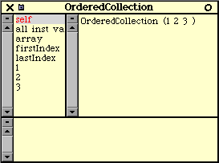
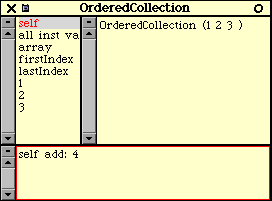
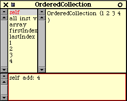
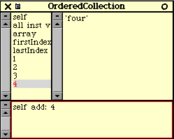
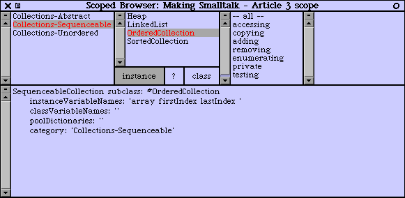
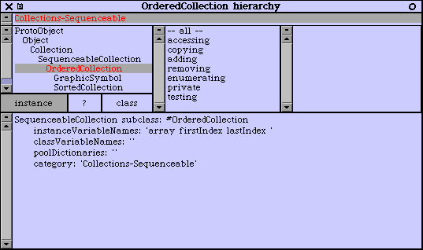
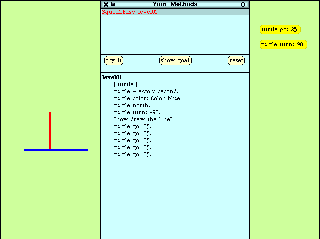

[ex1]
"Inspect this code. Here we're creating a
new
OrderedCollection, and asking it to add 1, then add 2, then
add 3, then finally return yourself"
(OrderedCollection new) add: 1; add: 2;
add: 3; yourself.
[ex2]
"This is normally not written on one line, but is
written like this:"
(OrderedCollection new)
add: 1;
add: 2;
add: 3;
yourself.
Here, we're asking the class (remember, this is a blueprint for creating objects) OrderedCollection to create a new collection. Then we're asking the new collection to add 1 to itself. Then we're asking the same new collection to add 2 to itself, then 3, and then finally we're asking the collection to return itself. You normally don't have to send that last message to an object, as the default return is the object itself (we call this the receiver of the the messages), but the message add: returns the parameter you're passing, so in this case, if we want to see the OrderedCollection that we're creating, we need to ask it to return itself as the last message send. This may be a little confusing; I showed the above snippet as it explicitly creates a new object. You could get the same results by inspecting the below two snippets, that don't explictly create a new object - this is done implicitly from the message sent:
[ex3]
"Here, we're asking the OrderedCollection
class to give us a new OrderedCollection object with the values
1, 2, and 3 in it."
OrderedCollection with: 1 with: 2 with: 3
[ex4]
"Here, we're asking the OrderedCollection
class to give us a new OrderedCollection object with all of the
values 1, 2 and 31"
OrderedCollection withAll: #(1 2 3)
[ex5]
Now, if you print it to the above code, you'll
see an ASCII representation of the object: OrderedCollection (1
2 3 ). When you inspect the above code, and click on self
you will see:

[ex6]
There are several ways that we could make an ordered
collection with a fourth Integer in it, here's a neat way.
Say that you have this OrderedCollection with only the first 3 integers
in it, and realize 'wups, I actually wanted 4 integers in it.' You
don't have to go back to the code you typed in above and redo it, you can
just ask the object you're inspecting to add a fourth integer to itself:

[ex7]
Highlight the code entered in the bottom pane, and
do
it. Here, you're asking the object itself (self) to add
4 to itself. If you have self highlighted, you'll notice that
it is updated (if you don't have self highlighted, then click on
it to see the updates. You'll see:

This is an illustration of being able to view and
manipulate objects in real time, which is Immensely Powerful.
If you're coding along and something isn't quite working right, you can
stop execution, grab the troublesome object and see exactly what is going
on. If you want to simulate certain conditions, you can just change
the object directly. For example, say you realized that you shouldn't
have the integer 4, but rather the string 'four', you can click on the
fourth element, delete 4, and tye in 'four', then middle click>accept.
The
fourth element in this collection is now the string 'four'.
Try
clicking on the 3rd element, then back to the fourth element to confirm
this, you'll see:

...and remember, we did all this without the hassle of compiling, linking, and running the compiled program! Ok, now that we have an idea about how to create a collection, we're going to do something with this collection, lets add up the integers in the collection. To do this, you can do it the following snippet:
[ex8]
| anOrderedCollection aSum |
aSum := 0.
anOrderedCollection := OrderedCollection withAll:
#(1 2 3).
anOrderedCollection do: [:anElement | aSum :=
aSum + anElement].
aSum inspect.
Here, the lines of code mean:
1) declare temporary variables
2) initialize the sum
3) create a new ordered collection, assign it to
one of the temporary variables
4) ask the ordered collection to do something for
each element. For each element, we're asking the sum to add the element
to itself.
5) here, we're asking the sum to open an inspector
on itself (yeah, you can do this programatically - cool eh?)
For the folks with programming experience, you'll
note that we didn't have to worry about bounds checking, or the size of
the collection, or declaring temporary variables to index the collection
- this is all handled by the collection. Very nice and it helps to
reduce errors. We very naturally just asked the ordered collection
to do something with each element.
Back to inheritence now, as the name suggests, OrderedCollection
is a type of Collection, and inherits methods and instance variables
from Collection. To be more precise, it inherits from a class
called SequenceableCollection, which in turn inherits from Collection.
Now, I could use UML, or any number of other industry software modeling
diagrams here, but I want to save time so I'm going to use a textual shorthand
for outlining class relationships - I'll denote inheritence by tabbing,
so indicating the above inheritence looks like this:
Collection
SequenceableCollection
OrderedCollection
You can think of this as OrderedCollection is
a type of SequenceableCollection, which is a type of Collection.
For example, a creation method we used - withAll: is inherited from
Collection,
I'll show this class method by:
Collection
>>withAll:
SequenceableCollection
OrderedCollection
Both Collection, and SequenceableCollection,
are what we call abstract classes - classes
that would never instantiate an object themselves, but serve as good logical
building points. Here, it doesn't matter if we have an OrderedCollection,
or
a SortedCollection, or a Bag (an unordered collection),
or whatever - we'd want all of them to know how to respond to withAll:.
Here's
the sweet thing: we implement the method that all these classes
should respond to in one spot, and reuse it. So, if you need
to change withAll: for these classes, then there's only one spot to
go to.
If you need to have an exception to the rule, say
you have have a Heap2 class
that needs to implement the withAll: method differently, then you
can do what is called overriding the method
in Heap. Adding Heap to our outline, and indicating
abstract classes in italics gives us:
Collection
>>withAll:
SequenceableCollection
OrderedCollection
Heap
>>withAll:
Note: when we send the withAll: message
to Heap or to OrderedCollection, these two classes have
different implementation of the same message - this is known as polymorphism.
This
is another one of those esoteric terms that really means something pretty
simple.
The corollary of polymorphism is a very powerful
one though, it allows you to get out of a decision making frame
of mind, and get into a commanding frame of mind. This allows
us to get away from a common procedural programming trait - having lot
of code that is checking stuff and conditionally doing stuff (if it's an
OrderedCollection,
do this, if it's a Heap, do this, if it's a Bag, do this,
etc), and lets us just do stuff. It doesn't matter what type of collection
it is, when we ask it to do withAll:, it will do the right thing!
Finally, if we also add the above mentioned SortedCollection
and
Bag (<groan> here's where this month's title pun comes from ;-),
we get:
Collection
>>withAll:
Bag
SequenceableCollection
OrderedCollection
SortedCollection
Heap
>>withAll:
It's easy to see how there are lots of opportunities
for reuse here, it's generally a good thing when you can code something
in one spot, and have many objects reuse that one implementation.
That way, when you have to make an udpate, you only update that one spot
and don't have to worry with tracking down many different spots and keeping
the update in synch.
Now we're going to start getting to the question
of how we know what objects are where and how to use them. As with
other topics in this series, I'm introducing this one a bit at a time as
well. A common problem for Smalltalk beginners is that they're overwhelmed
with the rich class library as there are thousands of objects you can use.
To help reduce this problem, I've extended one of the Smalltalk browsers
and made a ScopedBrowser. This is a good example of the reflectiveness
we mentioned earlier - I was able to extend or alter the behavior of the
IDE to suit my needs. This ScopedBrowser will only show you
the classes we need to concentrate on for this article. My intent
is to add to the scope that is being browsed over time as more objects
are introduced. For this time, I've included all the above mentioned
collections objects as well as a couple more collections objects for those
interested (a total of 9 classes). To open this browser, you first
need to file in the MakingSmalltalk-Article3.st
code to your image (see
article 2 on how to do this).
Then open the browser by doing the snippet:
[ex9] [Squeak-only-suspected]
ScopedBrowser openBrowserForArticle3
For the read-along folks, this is what you'll see
after navigating to the withAll: method:

(Note: I set my browser colour
to purple - the default colour is green, I'll come back to customization
in a future article)
To find the withAll: method, click on the
class
button, then Collections-Abstract>Collection>instanceCreation>withAll:
This browser has 5 panes and 3 buttons, from left
to right and top to bottom:
pane 1: shows categories
- these are collections of classes (pun intended)
pane 2: shows classes
pane 3: shows categories
- these are collections of methods
pane 4: shows methods
pane 5: shows Smalltalk
code
button 1: toggles the browser
to show the instance methods of the object
button 2: toggles the browser
to show the class comments
button 3: toggles the browser
to show the class methods of the object
Now, if we step back a little bit, and click on
Collections-Sequenceable>OrderedCollection,
you'll see:

Note that the code pane shows who OrderedCollection
inherits from, as well as their instance variables, if you then go back
to the abstract classes and click on SequenceableCollection, you'll
notice that it inherits from Collection just as we discussed.
Take some time poking around these classes and get comfortable with navigating
in this browser. Look for the classes and methods we discussed above.
Finally, I'm going to introduce one more browser
- the hierarchy browser. This one is good when you're concentrating
on hierarchies and inheritence when you're coding. To open it, first
click on OrderedCollection again, then middle-click>spawn hierarchy.
You'll see:
[ex10]

Note, that this browser hasn't been scoped, and
shows the full hierarchy. Notice that Collection inherits from an
object called Object - no surprise here, most things about Smalltalk
are just what you would expect. Finally, the topmost object is ProtoObject,
which implements some really fundamental methods. The question naturally
arises: "What does ProtoObject inherit from?". The answer
is nothing, or nil to be more precise.
[ex11] [Squeak-only-suspected]
Project thumbnailFromUrl:
'http://www.squeak.org/Squeak2.0/2.7segments/SqueakEasy.extSeg'
For the read-along folks, you'll see a simple turtle
game project, and when you enter the project you can direct the turtle
by entering Smalltalk code:

Q: How compatible with [VisualWorks, VisualAge, Smalltalk/X, Dolphin,
etc] Smalltalk will the code examples be?
A: Though I'm not writing these articles with code portability
in mind, and I'm not doing any portability testing, much of the basic code
should be compatible. By basic code, I mean things like how collections
are used, how classes are declared, instance variable use, etc. Traditionally
where the different flavours of Smalltalk differ most is in GUI code.
With Squeak specifically, some of the cool stuff we're going to look at
isn't portable to other flavours, for example: the halo stuff, morphic
stuff, and downloading projects.
What I'll start doing though, is any code that I
a priori suspect is Squeak specific, I'll tag with [Squeak-only-suspected].
NOTE: this will only indicate my suspicion - I don't plan
on spending time on testing it in different flavours, or searching for
ways to accomplish the same task in a different manner.
This would be a great use of the Linux Gazette's
talkback sections - if other Smalltalkers note what does and doesn't work
in other flavours, they can post this info. Also starting with this
article, I'll start indexing the examples so they're easier to refer to
for this purpose (ie: ex1, ex2). I haven't done this yet, as I wanted
to keep the series informal, but I expect enumerating examples will make
it easier/clearer to post talkbacks. If you don't like the enumerating
- post a talkback.